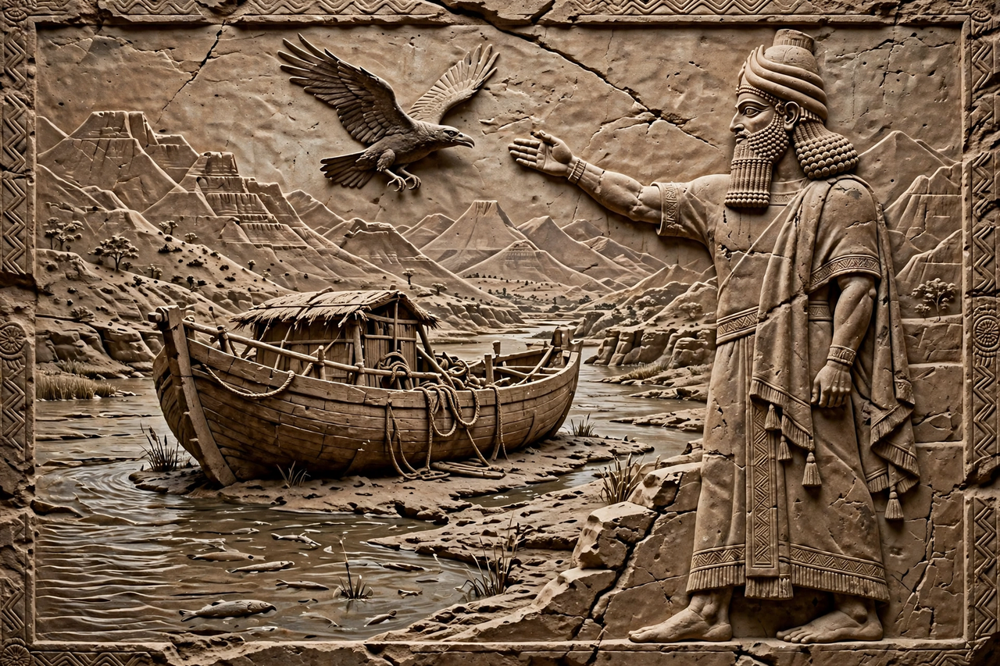

Utnapishtim
| Utnapishtim | |
|---|---|
 | |
| Other names | Ziusudra (Sumerian); Atrahasis; Xisuthros |
| Abode | "The mouth of the rivers", Dilmun-like paradise beyond the sea |
| Texts | Epic of Gilgamesh, Tablet XI; Eridu Genesis; Atrahasis epic |
Utnapishtim (Akkadian: Ūta-napišti, conventionally rendered "He found life") is a figure in Mesopotamian mythology, best known from Tablet XI of the Epic of Gilgamesh. A survivor of a great flood sent by the gods, he and his wife were granted immortality and settled far away at the mouth of the rivers. The hero Gilgamesh journeys to him in search of the secret of eternal life, and Utnapishtim narrates the flood story — one of the closest parallels to the biblical account of Noah.
The flood story
According to Utnapishtim's account, the gods, led by Enlil, resolved to destroy humankind with a flood because human noise disturbed their rest. Ea (Enki), bound by an oath not to reveal the plan directly, warned Utnapishtim by speaking to the wall of his reed hut, instructing him to build a great boat, seal it with bitumen, and load it with his family, craftsmen, and "the seed of all living things".
The storm raged for six days and seven nights; even the gods were frightened and "cowered like dogs". When the waters subsided, the boat came to rest on Mount Nimush. Utnapishtim released a dove, then a swallow — both returned — and finally a raven, which did not come back, signalling that the waters had receded. He then offered a sacrifice, and Enlil, initially furious that anyone had survived, was persuaded by Ea to relent. Enlil blessed Utnapishtim and his wife, granting them eternal life "like the gods".
The test of sleep
When Gilgamesh asks how he too may win immortality, Utnapishtim challenges him to conquer sleep for six days and seven nights. Gilgamesh immediately falls asleep, and Utnapishtim's wife bakes a loaf of bread for each day he sleeps, so that on waking he cannot deny his failure. Utnapishtim then tells him of a plant that restores youth, growing on the sea floor; Gilgamesh retrieves it, but a serpent steals it while he bathes, and he returns empty-handed to Uruk.
Parallels and origins
Utnapishtim corresponds to the Sumerian flood hero Ziusudra of the Eridu Genesis and to Atrahasis in the Atrahasis epic; the Greek historian Berossus calls him Xisuthros. Scholars regard the Gilgamesh flood tablet as adapted from these older Mesopotamian traditions, and it is frequently compared with the Genesis flood narrative and other flood myths worldwide.